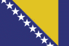

|
Länderinformationen Bosnien
1. Das Wichtigste auf einen Blick2. Sehens- und Hörenswertes
3. Politik & Gesellschaft
4. Schmeckenswertes
5. Medien
6. Reisetipps
1. Wissenswertes
|  | Hier haben wir die wichtigsten Zahlen und Fakten zu Bosnien und
der dort gesprochenen Sprache zusammengetragen. |
Wir freuen uns, dass Sie sich für einen Expresskurs von Sprachenlernen24 entschieden haben. Um Ihnen die Reisevorbereitungen zu erleichtern und Ihnen einen kleinen Vorgeschmack dessen zu geben, was Sie in Bosnien und Herzegowina erwarten wird, haben wir hier Wissenswertes, Wichtiges, Kurioses, Interessantes, Kulinarisches und noch viele Informationen mehr rund um das Land, seine Sprachen und In diesem Länderbericht finden Sie zum Beispiel Antworten auf diese Fragen:
- Zu welcher Sprachfamilie gehört das Bosnische?
- Wie groß ist Bosnien und Herzegowina denn überhaupt?
- Wie ist die ökonomische Situation des Landes?
- Mit welcher Währung bezahlt man dort?
- Welche Uhrzeit gilt in Bosnien und Herzegowina?
- Welches sind besonders eindrucksvolle Reiseziele?
- Was erwartet mich in Bosnien und Herzegowina in kulinarischer Hinsicht?
- Wie ist die politische Lage im Land?
- Gibt es Tageszeitungen, die auf Bosnisch erscheinen und im Internet zu finden sind?
- Wie ist das Klima beschaffen?
- Was sollten Sie besonders beachten?
- Was soll ich denn einpacken, wenn ich verreise?
Neben den Antworten auf diese Fragen finden Sie in dieser kleinen Zusammenstellung auch einen Serviceteil mit wichtigen Adressen, Internetseiten und Telefonnummern.
Eine erholsame Reise und viele wunderschöne Urlaubserlebnisse wünscht Ihnen, das Team der Sprachenlernen24-Redakteure
Im nun folgenden Teil haben wir interessante Fakten zur bosnischen Sprache und zum Land Bosnien und Herzegowina zusammengestellt.
 Bosnisch – eine slawische Sprache
Bosnisch – eine slawische Sprache
Bosnisch gehört zu den slawischen Sprachen, die wiederum eine Untergruppe der indogermanischen Sprachen bilden.
Die slawischen Sprachen werden nach ihrer geographischen Lage unterschieden. Zur Gruppe der ostslawischen Sprachen zählen Russisch und Ukrainisch, zum Westslawischen gehören Tschechisch, Slowakisch, Polnisch und Sorbisch. Kroatisch, Serbisch, Mazedonisch, Slowenisch, Bulgarisch und schließlich Bosnisch sind südslawische Sprachen.
Ein Teil der slawischen Sprachen wird in lateinischer Schrift geschrieben, die anderen mit kyrillischen Schriftzeichen (z.B. Russisch und Bulgarisch). Bosnisch kann sowohl mit kyrillischen als auch mit lateinischen Buchstaben geschrieben werden, de facto wird heute allerdings nahezu ausschließlich die lateinische Schrift verwendet, was für Sie ein Erlernen der Sprache und das Lesen von Texten entscheidend erleichtern wird.
Die bosnische Sprache wird nach aktuellen Schätzungen von mehr als fünf Millionen Menschen weltweit gesprochen. Die Mehrheit der Muttersprachler des Bosnischen lebt dabei im Staat Bosnien und Herzegowina, wo Bosnisch neben Kroatisch und Serbisch offizielle Amtssprache ist.
Größere bosnischsprachige Minderheiten gibt es zudem in den Anrainerstaaten Serbien, Montenegro und Kroatien sowie in der Türkei, den Vereinigten Staaten und in Westeuropa. Vielleicht kennen Sie ja auch Menschen in Ihrer Nachbarschaft, Ihrem Betrieb oder in Ihrem Freundeskreis, die Bosnisch als Muttersprache sprechen und mit denen Sie das in diesem Kurs Erlernte einem ersten praktischen Test unterziehen können.
Die Sprachen Bosnisch, Kroatisch und Serbisch zeichnen sich durch eine sehr ähnliche Grammatik aus und ihre Sprecher können sich in der Regel gut untereinander verstehen. Jedoch gibt es im Vokabular teilweise deutliche Unterschiede, zudem wird Kroatisch und Bosnisch in lateinischer, Serbisch dagegen in kyrillischer Schrift geschrieben.
Im Bosnischen werden einige Buchstaben und Laute verwendet, die in der deutschen Sprache nicht vorkommen. Diese werden wir Ihnen in der folgenden Tabelle kurz vorstellen:
Buchstabe/Laut |
Beschreibung der Aussprache |
c |
z: wie
in Zahn |
č |
tsch:
wie in Tschechien |
ć |
tch
oder tj: wie in Mädchen/Bettchen oder Tatjana |
d¸ |
dsch:
wie in Dschungel |
đ |
d+j/sch:
wie im Italienischen gi/ge: Giovanni |
lj |
ähnlich
wie im Spanischen: Sevilla |
nj |
ähnlich
wie im Spanischen: niño |
š |
sch:
wie in schade |
z |
s: wie
in Hase |
¸ |
stimmhaftes
weiches sch: wie in Genie, sich genieren, Journalist |
Nun aber zum Land Bosnien und Herzegowina: Sie finden im folgenden Abschnitt hierzu interessante Fakten und landestypische Informationen.
 Bevölkerung
Bevölkerung
Die Republik Bosnien und Herzegowina hat rund 4,5 Millionen Einwohner, von denen knapp die Hälfte Bosniaken (seit 1993 Bezeichnung für die bosnischen Muslime) sind. Weitere größere ethnische Gruppen stellen Serben (mit 37% der Bevölkerung) und Kroaten (14%) dar. Daneben gibt es noch Roma und kleinere jüdische Gemeinden, die aber zusammen weniger als 1% der Bevölkerung ausmachen. Gesprochen werden im Land hauptsächlich die Sprachen Bosnisch, Serbisch und Kroatisch. Gerade jüngere Menschen können meist auch ein wenig bis überraschend gut Deutsch oder Englisch sprechen.
Das Durchschnittsalter der Bevölkerung liegt bei rund 39 Jahren. Die Bevölkerung ist damit nur unwesentlich „jünger“ als beispielsweise die deutsche, bei der das Mittel bei knapp 43 Jahren ist. Die durchschnittliche Lebenserwartung liegt in Bosnien und Herzegowina bei rund 78 Jahren und entspricht damit ziemlich der in Deutschland, die nur um ein knappes Jahr höher liegt.
 Fläche
Fläche
Das Staatsgebiet von Bosnien und Herzegowina umfasst eine Fläche von rund 51.000 km² und ist damit in etwa so groß wie Niedersachsen.
Seine Nachbarstaaten sind im Norden und Westen Kroatien, im Osten Serbien und im Süden Montenegro.
 Währung
Währung
In Bosnien und Herzegowina wird mit der Konvertiblen Mark (KM) bezahlt, die unterteilt ist in 100 Fening (Kf). Diese Währung zeichnet die Besonderheit aus, dass sie direkt an den Kurs der Deutschen Mark gekoppelt war und seit der Umstellung auf den Euro an dessen Kurs gebunden ist.
Der Wechselkurs zum Euro ist daher derselbe, wie es seinerzeit jener der D-Mark war: Einem Euro entsprechen 1,96 KM.
 Ökonomische Situation
Ökonomische Situation
Während des Bosnienkriegs (1992-95) wurde die ökonomische Struktur des Staates zu weiten Teilen zerstört. Obwohl die Wirtschaft seitdem relativ hohe Wachstumsraten erlebt (freilich von einem niedrigen Niveau aus), ist Bosnien und Herzegowina bis heute eines der ärmsten Länder der Balkan-Halbinsel. Die offizielle Erwerbslosenquote beträgt mehr als 40%, berücksichtigt man den relativ hohen Anteil des informellen Sektors, so bleibt dennoch eine Arbeitslosigkeit von rund 25% der Bevölkerung.
Bis heute lebt daher etwa ein Viertel der bosnisch-herzegowinischen Bevölkerung unterhalb der Armutsgrenze.
Die Landwirtschaft ist kaum in der Lage, den staatlichen Bedarf zu decken und so ist das Land weiterhin auf ein relativ hohes Maß an Lebensmittelimporten angewiesen. Die wichtigsten Produkte der heimischen Landwirtschaft sind Weizen, Mais sowie Früchte und Gemüse.
Der industrielle Sektor gewinnt in den letzten Jahren, auch durch Investitionen internationaler Konzerne, zunehmend an Bedeutung und erwirtschaftet heute rund ein Drittel des Bruttoinlandsprodukts. Hauptexportgüter des Landes sind Metalle, Textilien, Möbel und Fahrzeugteile.
Der Tourismus hat, seitdem viele Kriegsschäden beseitigt und eine ganze Reihe an Sehenswürdigkeiten wiedererrichtet oder restauriert wurden, in den letzten Jahren einen langsamen, aber deutlichen Aufschwung erlebt und stellt heute wieder einen bedeutenden Wirtschaftsfaktor dar.
 Zeitzone
Zeitzone
Bosnien und Herzegowina liegt in der gleichen Zeitzone wie Österreich, Deutschland und die Schweiz. Bei einer Reise müssen Sie also Ihre Uhr nicht umstellen.
Wie auch hierzulande, werden in Bosnien und Herzegowina die Uhren im Sommer auf die mitteleuropäische Sommerzeit umgestellt.
Im nächsten Kapitel haben wir einige ausgesuchte Reiseempfehlungen zusammen gestellt.